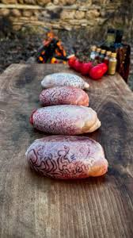

Billur Kebabı

Açıklama
Görüntüsü itibariyle şırdana benzeyen koç yumurtası kullanılarak yapılan bu kebap Adana başta olmak üzere ülkemizin birçok yöresinde sevilerek tüketiliyor.
Ne var ki billur kebabının tadı etten ziyade havyara benziyor. Genelde meze olarak tüketilen billur kebabı kimi zaman ara öğün niyetine de yenebiliyor.
Malzemeler
- Zeytin yağı
- Pul biber
- Tuz
- Karabiber
Adımlar
- Koç yumurtasının zarı soyulduktan sonra yıkanır ve kurulanır.
- Kurulanan koç yumurtası ince dilimler halinde kesilir.
- Kesildikten sonra zeytinyağı, pul biber, tuz ve karabiber ile karıştırılarak marine edilir.
- Birkaç saat buzdolabında marine halde bekletildikten sonra koç yumurtası ızgara ya da mangalda pişirilir.